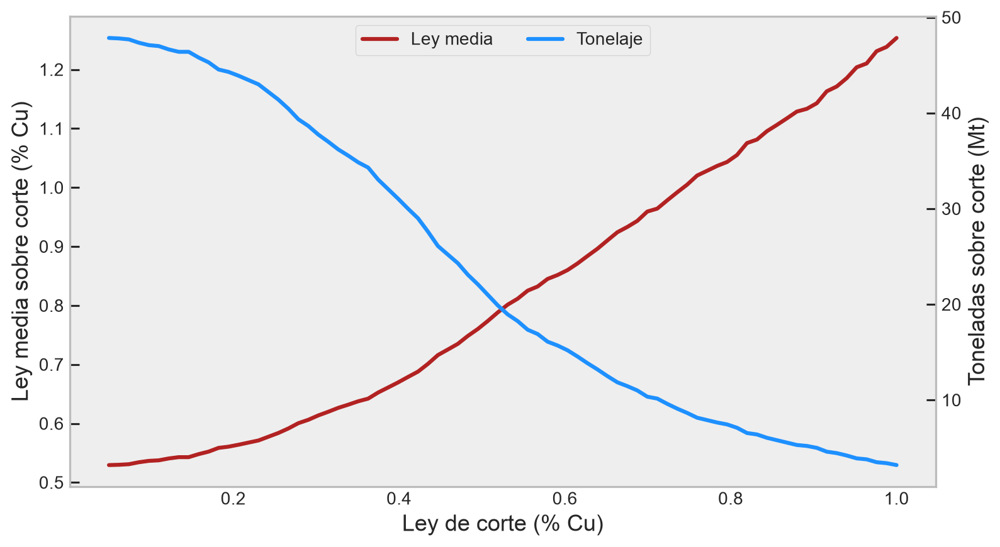
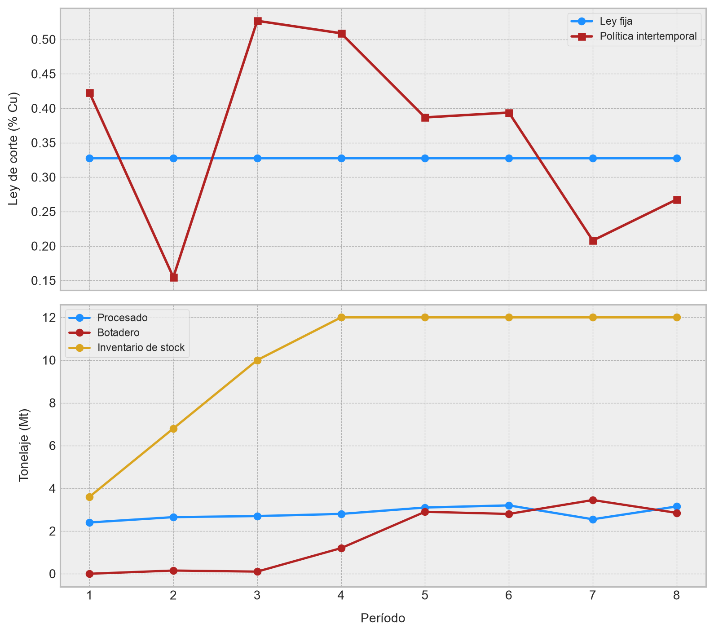
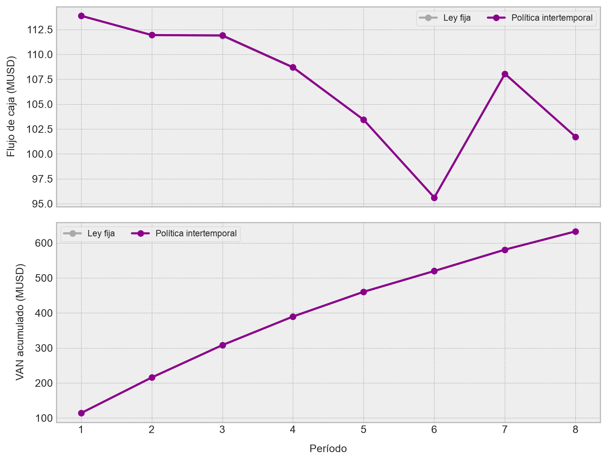

flowchart LR
A[Mina<br/>capacidad M] -->|Q_m| B{Clasificación}
B -->|Q_c| C[Concentradora<br/>capacidad C]
B -->|Q_m - Q_c| D[Botadero]
C -->|Q_r = y g Q_c| E[Refinería / mercado<br/>capacidad R]
Leyes de corte y estrategia de consumo de reservas
Los modelos de Vickers y Lane, desde la red mina-planta-refinería hasta stockpiles y coproductos
Minería
Planificación Minera
Economía Minera
Optimización
Python
Una derivación minera y matemática de los modelos de Vickers y Lane para determinar leyes de corte, administrar restricciones de capacidad y construir estrategias de consumo de reservas.
NoteIdea central
Una ley de corte no es una propiedad geológica del yacimiento: Es una decisión económica que clasifica material y determina su destino dentro de un sistema productivo con capacidades limitadas. El método de Vickers construye esta decisión a partir del beneficio operacional de un período representativo. Por otro lado, el algoritmo de Lane agrega el costo de oportunidad de consumir hoy una capacidad que podría utilizarse mañana y convierte el problema de la determinación de una ley de corte en una política intertemporal orientada a maximizar el valor actual neto.
Introducción
Los modelos de Vickers y Lane tienen un lugar especial en mis recuerdos universitarios. En la asignatura de Economía Minera (por lejos la más temida en el Departamento de Ingeniería en Minas de la USACH, al menos en mis tiempos universitarios) aparecían como ejercicios aparentemente constructivos y bien estructurados: Una mina, una planta, una refinería y unas cuantas letras que representaban ciertas restricciones y/o cantidades. Después comenzaban a cambiar los cuellos de botella del sistema minero-metalúrgico presentado, aparecía un stockpile, entraba un segundo metal y, en menos de una página, la sala completa estaba negociando con la calculadora y con Dios. Causaban estragos. Y ni hablar cuando el problema involucraba diferentes variantes de métodos de explotación, rutas metalúrgicas alternativas o contratos de venta con topes de producción. Una auténtica pesadilla.
Esta entrada nace de una ayudantía que preparé hace varios años para ordenar esos ejercicios en un único par de modelos productivos. Sin embargo, no nos limitaremos a transcribir sus láminas. Reconstruiremos las expresiones desde sus balances físicos, corregiremos algunas simplificaciones docentes y las conectaremos con la forma en que un planificador minero (en teoría) entiende realmente el problema: Qué material extraer, cuándo hacerlo, a qué destino enviarlo y qué capacidad escasa conviene consumir.
El punto de partida es sencillo. En un inventario, un bloque no es mineral o estéril por naturaleza. La roca tiene masa, leyes, recuperaciones y atributos geometalúrgicos; nosotros le asignamos un destino en función de precios, costos, capacidades, secuencia y oportunidad. Por eso una ley de corte puede cambiar entre períodos aun cuando el modelo geológico permanezca invariante en dichos períodos.
Tip¿Qué es una ley de corte?
Una ley de corte es una decisión económica que clasifica material y determina su destino dentro de un sistema productivo con capacidades limitadas. No es una propiedad geológica del yacimiento. Cuando disponemos de un modelo de bloques y conocemos precios, costos y capacidades, la ley de corte se define económicamente como aquella ley que maximiza el valor actual neto del plan de producción. Sin embargo, existen otros criterios que distan de los aspectos financieros que gobiernan la política extractiva. Por ejemplo, la ley de corte puede definirse como aquella que garantiza que un bloque marginal paga su procesamiento, o aquella que equilibra la ocupación de dos cuellos de botella. En este artículo, estamos interesados en su variante económica.
La ley de corte como decisión de destino
Sea \(G\) la variable aleatoria que representa la ley de alimentación y sea \(\gamma\) una ley de corte. Para un inventario de masa \(Q_{m}\), definimos la fracción de material sobre la ley de corte y su ley media condicional como
\[ p(\gamma)=P(G\geq\gamma), \qquad \overline{g}(\gamma)=\mathrm{E}[G\mid G\geq\gamma] \tag{1} \]
donde \(P\) es el operador de probabilidad y \(\mathrm{E}\) el operador de valor esperado. Si todo material con \(G\geq\gamma\) se procesa, el tonelaje de planta y el metal recuperado son
\[ Q_c(\gamma)=Q_m p(\gamma), \qquad Q_r(\gamma)=y\,\overline{g}(\gamma)Q_c(\gamma) \tag{2} \]
donde \(y\in(0,1]\) es la recuperación metalúrgica. Estas funciones reúnen la relación ley-tonelaje del yacimiento: Subir \(\gamma\) reduce el tonelaje a procesar, pero incrementa la ley media de la alimentación. Este trade-off es el corazón del problema de planificación minera.
En una mina real, la regla binaria proceso-botadero es apenas el caso más simple. Un bloque puede enviarse a plantas de procesamiento de naturalezas diferentes, stocks de alta o baja ley, botaderos, ir a venta directa o una ruta metalúrgica alternativa. En consecuencia, una ley de corte es mejor entendida como una frontera entre destinos. Depende del contexto geometalúrgico y, sobre todo, de la economía del sistema productivo: Precios, costos, capacidades y secuencia de extracción.
El complejo minero
Comenzaremos con una red formada por tres unidades productivas:
Usaremos la siguiente notación:
- \(M\), \(C\) y \(R\) son las capacidades de mina, concentradora y producción de metal refinado por unidad de tiempo.
- \(Q_{m}\), \(Q_{c}\) y \(Q_{r}\) son los flujos efectivos asociados a esas unidades.
- \(m\), \(c\) y \(r\) son, respectivamente, el costo unitario mina por tonelada de material movido, el costo de concentración por tonelada procesada y el cargo de refinación por unidad de metal (este último suele denominarse en la jerga especializada como maquila de fundición y refinación).
- \(f\) es el costo fijo por unidad de tiempo.
- \(s\) es el precio por unidad de metal pagable.
- \(y\) es la recuperación metalúrgica y \(g\) la ley de una unidad marginal de material.
El ingreso y el costo operacional para un período de duración \(t\) se describen por medio de las ecuaciones
\[ I=sQ_{r}, \qquad C_{\mathrm{op}}=mQ_{m}+cQ_{c}+rQ_{r}+ft \tag{3} \]
Como \(Q_{r}=ygQ_c\), el beneficio antes de descuento queda dado por
\[ B=Q_{c}\left[(s-r)yg-c\right]-mQ_{m}-ft \tag{4} \]
La cantidad \((s-r)yg\) es el ingreso neto atribuible a una tonelada de mineral antes del costo de concentración. En planificación minera suele ser más claro llamarla valor neto de fundición recuperado por tonelada, aunque aquí mantendremos la notación compacta de la formulación original.
El criterio estático de Vickers
El método de Vickers compara el beneficio incremental de procesar una tonelada marginal bajo distintos recursos limitantes. Su lógica es estática: Analiza un período representativo y no cobra explícitamente por postergar valor futuro. Sin embargo, depende de qué proceso de los que constituyen el complejo minero sea el cuello de botella.
Restricción de mina
Si la mina opera a plena capacidad, entonces se tiene que \(Q_{m}=Mt\). Aumentar marginalmente el material enviado a planta no modifica las toneladas de material movidas en la mina ni la duración del período. La tonelada marginal debe pues pagar su procesamiento:
\[ (s-r)yg_m-c=0 \tag{5} \]
Por tanto, la ley económica asociada a la restricción de mina es
\[ g_m=\frac{c}{(s-r)y} \tag{6} \]
El costo mina no aparece porque, bajo este razonamiento, la tonelada ya fue extraída: La decisión marginal es, simplemente, procesarla en la concentradora o no.
Restricción de concentradora
Si la planta es el cuello de botella, entonces se tiene que \(Q_{c}=Ct\) y tratar una tonelada adicional consume \(1/C\) unidades de tiempo. Esa ocupación agrega costo fijo:
\[ (s-r)yg_c-c-\frac{f}{C}=0 \tag{7} \]
Luego,
\[ g_c=\frac{c+f/C}{(s-r)y} \tag{8} \]
Esta ley suele ser mayor que \(g_{m}\): Cuando cada hora de planta es matemáticamente escasa, no basta con que una tonelada pague su tratamiento; debe contribuir también a sostener el sistema durante el tiempo que ocupa.
Restricción de refinería o mercado
Si la producción de metal está limitada a \(Q_{r}=Rt\), una tonelada de mineral de ley \(g\) consume \(yg/R\) unidades de tiempo. La condición marginal es por tanto
\[ (s-r)yg_r-c-\frac{fyg_r}{R}=0 \tag{9} \]
de donde obtenemos
\[ g_r=\frac{c}{\left(s-r-f/R\right)y} \tag{10} \]
La expresión (10) exige que \(s-r-f/R>0\). Si no se cumple, el margen por unidad de metal no alcanza para sostener el costo temporal del sistema y no existe una ley de corte positiva finita bajo este régimen.
WarningBeneficio no es lo mismo que VAN
El criterio de Vickers es útil para comprender la economía marginal y construir una política estática. Sin embargo, maximizar el beneficio total no descontado no equivale, en general, a maximizar el valor actual neto (VAN). Dos planes con el mismo beneficio acumulado pueden tener valores muy distintos si uno adelanta metal y el otro posterga los flujos favorables.
El criterio intertemporal de Lane
El método de Lane incorpora precisamente aquello que falta en el análisis estático propuesto por Vickers: El valor de lo que queda en el yacimiento y el costo de ocupar una capacidad hoy.
Del valor remanente al costo de oportunidad
Sea \(V\) el valor actual del plan desde el estado actual y sea \(W\) el valor del mineral que permanecerá después del período. Si \(d\) es una tasa de descuento continuamente compuesta, la identidad exacta para un período de duración \(t\) es
\[ V=e^{-dt}(B+W) \tag{11} \]
Para períodos cortos, \(e^{dt}\approx 1+dt\) (lo que se justifica en la llamada desigualdad de Bernoulli). Al reorganizar la aproximación de primer orden,
\[ B+W-V\approx dVt \tag{12} \]
El término \(F=dV\) se interpreta como un costo de oportunidad instantáneo por unidad de tiempo. En la formulación marginal, el costo temporal efectivo pasa de \(f\) a
\[ f^\star=f+F=f+dV \tag{13} \]
No es un costo contable. Representa el valor que dejamos de capturar al inmovilizar durante más tiempo una planta, una mina o una capacidad comercial que podría adelantar flujos futuros.
Leyes económicas de Lane
Sustituyendo \(f\) por \(f+dV\) en las restricciones temporales derivadas a partir del método de Vickers, obtenemos
\[ g_m=\frac{c}{(s-r)y} \tag{14} \]
\[ g_c=\frac{c+(f+dV)/C}{(s-r)y} \tag{15} \]
\[ g_r=\frac{c}{\left[s-r-(f+dV)/R\right]y} \tag{16} \]
La ley de mina permanece inalterada porque procesar una tonelada ya minada no prolonga una operación limitada por movimiento mina. En cambio, las leyes de planta y refinería aumentan con \(V\): Cuando queda mucho valor por capturar, consumir lentamente las capacidades escasas resulta caro.
Leyes de equilibrio
Las tres expresiones anteriores son leyes económicas. No bastan para construir la llamada política de Lane, porque el sistema puede cambiar de cuello de botella. Para identificar esos cambios necesitamos leyes de equilibrio.
La ley \(g_{mc}\) equilibra mina y concentradora:
\[ \frac{Q_m(g_{mc})}{M} = \frac{Q_c(g_{mc})}{C} \tag{17} \]
La ley \(g_{mr}\) equilibra mina y refinería:
\[ \frac{Q_m(g_{mr})}{M} = \frac{Q_r(g_{mr})}{R} \tag{18} \]
y la ley \(g_{cr}\) equilibra planta y refinería:
\[ \frac{Q_c(g_{cr})}{C} = \frac{Q_r(g_{cr})}{R} \tag{19} \]
Estas ecuaciones dependen de la distribución de leyes, porque \(Q_c(\gamma)\) y \(\overline g(\gamma)\) cambian con \(\gamma\). Normalmente se resuelven numéricamente sobre la curva de tonelaje v/s ley.
La ley operativa no se obtiene tomando ciegamente el máximo o el mínimo de todas las candidatas. Debemos:
- Calcular las leyes económicas \(g_{m}\), \(g_{c}\) y \(g_{r}\).
- Calcular las leyes de equilibrio \(g_{mc}\), \(g_{mr}\) y \(g_{cr}\).
- Identificar qué capacidades quedarían activas para cada candidata.
- Descartar las candidatas incompatibles con su supuesto de cuello de botella.
- Escoger, entre las candidatas factibles, aquella que entrega el mayor valor incremental.
- Actualizar \(V\), avanzar el estado de reservas y repetir.
El modelo de Lane, por ello, nos propone una política iterativa. El valor del remanente determina la ley actual y la ley actual modifica el valor del remanente. Se habla pues del algoritmo de Lane, que consiste en iterar entre la determinación de leyes y la actualización del valor remanente hasta converger a una política estable.
Consideración de botaderos
Supongamos ahora que el material no procesado (estéril o lastre) se envía a un botadero a un costo \(l\) por tonelada y que \(Q_{l}=Q_{m}-Q_{c}\). El costo total es
\[ C_{\mathrm{op}}=mQ_{c}+lQ_{l}+cQ_{c}+rQ_{r}+ft \tag{20} \]
Al sustituir \(Q_{l}=Q_{m}-Q_{c}\),
\[ B =Q_{c}\left[(s-r)yg-m-c+l\right]-lQ_{m}-ft \tag{21} \]
La tonelada marginal enviada a planta evita el costo de botadero \(l\), pero incurre en remoción y concentración. Las leyes económicas derivadas del modelo de Vickers son
\[ g_{m}=\frac{m+c-l}{(s-r)y} \tag{22} \]
\[ g_{c}=\frac{m+c-l+f/C}{(s-r)y} \tag{23} \]
\[ g_{r}=\frac{m+c-l}{\left(s-r-f/R\right)y} \tag{24} \]
La estructura del numerador \(m+c-l\) se obtiene directamente al comparar los destinos de proceso y botadero para una tonelada marginal. Enviar el material a planta exige pagar los costos de mina y procesamiento, \(m+c\), pero evita el costo de disposición \(l\) que habría sido incurrido al descartarlo. Por esta razón, \(m\) y \(c\) entran con signo positivo, mientras que \(l\) actúa como un costo evitado y aparece con signo negativo.
Para el modelo de Lane, sustituimos \(f\) por \(f+dV\) en las expresiones condicionadas por tiempo:
\[ g_{c}=\frac{m+c-l+(f+dV)/C}{(s-r)y}, \qquad g_{r}=\frac{m+c-l}{\left[s-r-(f+dV)/R\right]y} \tag{25} \]
Consideración de stockpiles
Consideremos que una fracción \(\alpha\) de la alimentación llega directamente desde mina y que \(1-\alpha\) se recupera desde un stockpile. Sea \(n\) el costo de remanejo del stock. El costo variable equivalente por tonelada tratada es
\[ a(\alpha)=\alpha m+c-l+(1-\alpha)(l+n) \tag{26} \]
Así,
\[ B=Q_{c}\left[(s-r)yg-a(\alpha)\right]-lQ_{m}-ft \tag{27} \]
y las leyes económicas estáticas que derivamos del modelo de Vickers son
\[ g_{m}(\alpha)=\frac{a(\alpha)}{(s-r)y}, \qquad g_{c}(\alpha)=\frac{a(\alpha)+f/C}{(s-r)y}, \qquad g_{r}(\alpha)=\frac{a(\alpha)}{\left(s-r-f/R\right)y} \tag{28} \]
Cuando \(\alpha=1\) las ecuaciones anteriores se reducen al caso sin stockpile. Sin embargo, esta formulación trata al stock como un nodo de transbordo. En planificación de mediano y largo plazo necesitamos conservar masa y metal entre períodos:
\[ S_{t+1}=S_{t}+A_{t}-R_{t}; \qquad 0\leq S_{t}\leq \overline S \tag{29} \]
donde \(A_{t}\) y \(R_{t}\) son las toneladas apiladas y recuperadas. Para conservar calidad, debe añadirse un balance de metal:
\[ S_{t+1}\overline g_{t+1}=S_{t}\overline g_{t}+A_{t}g_{t}^{A}-R_{t}g_{t}^{R} \tag{30} \]
Un stockpile real no es una caja sin memoria. Es un inventario intertemporal que difiere valor, mezcla leyes, modifica recuperaciones y puede desacoplar temporalmente la mina y la planta.
Coproductos con mercados restringidos
Sea \(\mathcal K=\{1,\ldots,K\}\) el conjunto de productos de interés económico en nuestro complejo minero-metalúrgico. Para cada producto \(k\) definimos precio \(s_{k}\), cargo por maquila de fundición y refinación \(r_{k}\), recuperación \(y_{k}\) y ley \(g_{k}\). El ingreso neto y el beneficio son
\[ I=Q_{c}\sum_{k\in\mathcal K}(s_{k}-r_{k})y_{k}g_{k} \tag{31} \]
\[ B=Q_{c}\left[\sum_{k\in\mathcal K}(s_{k}-r_{k})y_{k}g_{k}-c\right]-mQ_{m}-ft \tag{32} \]
Si despejamos la ley del producto \(j\) bajo restricción de mina,
\[ g_{m}^{(j)}=\frac{c-\sum_{k\neq j}(s_{k}-r_{k})y_{k}g_{k}}{(s_{j}-r_{j})y_{j}} \tag{33} \]
La frontera mineral-estéril ahora ya no es un punto, sino que un hiperplano:
\[ \sum_{k\in\mathcal K}(s_{k}-r_{k})y_{k}g_{k}=c \tag{34} \]
Si definimos
\[ x_{k}=\frac{c}{(s_{k}-r_{k})y_{k}} \tag{35} \]
la frontera se escribe como
\[ \sum_{k\in\mathcal K}\frac{g_{k}}{x_{k}}=1 \tag{36} \]
Para una concentradora limitada bajo el criterio de Lane, basta reemplazar \(c\) por \(c+(f+dV)/C\). Si existen topes de venta, penalidades por impurezas o contratos diferenciados, esta equivalencia deja de ser global: El valor marginal de un metal depende de qué restricción comercial está activa.
Subproductos y ley equivalente
Cuando el segundo metal se comercializa sin una restricción propia y sus parámetros económicos permanecen estables, podemos expresarlo en unidades del metal principal. Para dos productos:
\[ E=\frac{(s_2-r_2)y_2}{(s_1-r_1)y_1} \tag{37} \]
La ley equivalente del producto \(1\) es
\[ g_{\mathrm{eq}}=g_1+Eg_2 \tag{38} \]
y el ingreso queda dado por
\[ I=Q_c(s_1-r_1)y_1g_{\mathrm{eq}} \tag{39} \]
La ley equivalente es por tanto una conversión económica, no mineralógica. Cambia con precios, recuperaciones, pagabilidades, penalidades y rutas metalúrgicas. Usarla como atributo fijo del modelo de bloques durante toda la vida de la mina puede esconder cambios relevantes en la economía del depósito.
Vickers y Lane en perspectiva
Los resultados anteriores se resumen en la Tabla 1.
| Aspecto | Vickers | Lane |
|---|---|---|
| Horizonte conceptual | Período representativo | Vida remanente del yacimiento |
| Objetivo | Beneficio operacional | Valor actual neto |
| Costo temporal | \(f\) | \(f+dV\) |
| Dependencia del estado | Limitada | Explícita: reservas y valor remanente |
| Cuellos de botella | Leyes económicas | Leyes económicas y de equilibrio |
| Uso natural | Diagnóstico y política estática | Estrategia iterativa de consumo de reservas |
Ninguno de los dos modelos de estimación de leyes económicas reemplaza un programa de producción moderno. Las precedencias de fases y bancos, las capacidades de carguío y transporte, las mezclas, los desarrollos, la geometalurgia y los compromisos comerciales suelen requerir modelos enteros mixtos o heurísticas de gran escala. Aun así, ambos modelos siguen siendo extremadamente valiosos desde una perspectiva fundacional: Exponen la economía marginal que un optimizador más grande puede ocultar.
Un ejercicio práctico orientado a la estrategia de consumo de reservas
Construiremos un caso sintético de alta complejidad. Tendremos ocho fases disponibles secuencialmente, capacidad de mina, planta y producción de cobre, botadero, stockpile y descuento. Compararemos:
- Una ley fija escogida con un criterio estático tipo Vickers.
- Una secuencia de leyes por período optimizada directamente sobre el VAN.
El segundo enfoque no pretende ser una implementación canónica completa del algoritmo de Lane. Es una auditoría numérica inspirada en su principio: Cobrar por el tiempo, conservar el estado del stockpile y valorar de manera distinta una tonelada según el período en que libera metal. Para ello, nos apoyaremos con Python (como no…) y haremos las importaciones correspondientes:
import matplotlib.pyplot as plt
import numpy as np
import pandas as pd
import seaborn as sns
from scipy.optimize import differential_evolution, minimize_scalarsns.set_theme()
plt.style.use("bmh")
plt.rcParams["figure.dpi"] = 90
pd.options.display.float_format = "{:,.3f}".formatConstrucción del inventario
Cada fila representará una unidad selectiva de planificación de \(50\,000\) toneladas. La ley de cobre disminuye suavemente con la profundidad y conserva variabilidad local; la recuperación también depende de la ley y de una componente geometalúrgica:
# Definimos una semilla aleatoria fija para garantizar reproducibilidad.
rng = np.random.default_rng(42)
# Configuramos parámetros iniciales.
N_PERIODS = 8
PARCELS_PER_PHASE = 120
TONNES_PER_PARCEL = 50_000.0
# Y construimos el inventario sintético.
rows = []
for phase in range(N_PERIODS):
geological_domain = rng.choice(
["primario", "mixto", "secundario"],
size=PARCELS_PER_PHASE,
p=[0.55, 0.30, 0.15],
)
domain_effect = np.select(
[
geological_domain == "primario",
geological_domain == "mixto",
geological_domain == "secundario",
],
[0.0000, 0.0010, 0.0020],
)
grade = np.clip(
rng.lognormal(mean=np.log(0.0048), sigma=0.48, size=PARCELS_PER_PHASE)
+ domain_effect
- 0.00018 * phase,
0.0003,
0.018,
)
recovery = np.clip(
0.82
+ 16.0 * grade
+ np.select(
[
geological_domain == "primario",
geological_domain == "mixto",
geological_domain == "secundario",
],
[0.02, -0.02, 0.04],
)
+ rng.normal(0.0, 0.015, PARCELS_PER_PHASE),
0.72,
0.94,
)
for parcel, (domain, g, rec) in enumerate(
zip(geological_domain, grade, recovery)
):
rows.append(
{
"phase": phase,
"parcel": parcel,
"tonnes": TONNES_PER_PARCEL,
"cu_grade": g,
"recovery": rec,
"domain": domain,
}
)
# Llevamos el inventario a un DataFrame y mostramos sus primeras filas en pantalla.
inventory = pd.DataFrame(rows)
inventory.head()| phase | parcel | tonnes | cu_grade | recovery | domain | |
|---|---|---|---|---|---|---|
| 0 | 0 | 0 | 50,000.000 | 0.011 | 0.940 | mixto |
| 1 | 0 | 1 | 50,000.000 | 0.004 | 0.901 | primario |
| 2 | 0 | 2 | 50,000.000 | 0.005 | 0.926 | secundario |
| 3 | 0 | 3 | 50,000.000 | 0.006 | 0.898 | mixto |
| 4 | 0 | 4 | 50,000.000 | 0.005 | 0.899 | primario |
Antes de optimizar, construiremos la curva de tonelaje v/s ley, dado que ésta permite anticipar cuánto material y metal sacrificamos al elevar la ley de corte:
# Primero, definimos una grilla de leyes de corte y un contenedor para los resultados.
cutoff_grid = np.linspace(0.0005, 0.0100, 80)
grade_tonnage = []
# Calculamos el tonelaje y la ley media para cada ley de corte.
for cutoff in cutoff_grid:
selected = inventory.loc[inventory["cu_grade"] >= cutoff]
grade_tonnage.append(
{
"cutoff": cutoff,
"tonnes": selected["tonnes"].sum() / 1e6,
"average_grade": np.average(
selected["cu_grade"],
weights=selected["tonnes"],
) if len(selected) else np.nan,
}
)
# Llevamnos los resultados a un DataFrame y graficamos.
grade_tonnage = pd.DataFrame(grade_tonnage)
fig, ax_grade = plt.subplots(figsize=(9, 5))
ax_tonnage = ax_grade.twinx()
ax_grade.plot(
100 * grade_tonnage["cutoff"],
100 * grade_tonnage["average_grade"],
color="firebrick",
lw=2.5,
label="Ley media",
)
ax_tonnage.plot(
100 * grade_tonnage["cutoff"],
grade_tonnage["tonnes"],
color="dodgerblue",
lw=2.5,
label="Tonelaje",
)
ax_grade.set(
xlabel="Ley de corte (% Cu)",
ylabel="Ley media sobre corte (% Cu)",
)
ax_tonnage.set_ylabel("Toneladas sobre corte (Mt)")
lines = ax_grade.lines + ax_tonnage.lines
ax_grade.legend(
lines,
[line.get_label() for line in lines],
loc="upper center",
ncol=2,
)
ax_tonnage.grid(False)
ax_grade.grid(False)
plt.tight_layout()
Simulador del complejo minero
El simulador mantiene el stockpile como estado. En cada período:
- Se libera una fase y se paga el movimiento de todas sus toneladas.
- El material sobre la ley de corte compite por planta y refinería.
- El material con valor potencial que no entra a planta se apila.
- Si queda capacidad, se recupera material del stock.
- Se calculan ingresos, costos, flujo y VAN.
# Configuración inicial de parámetros económicos y de capacidad.
PARAMS = {
"price": 8_820.0, # USD por tonelada de Cu pagable.
"refining": 620.0, # USD por tonelada de Cu.
"mining": 3.10, # USD por tonelada movida.
"processing": 9.20, # USD por tonelada tratada.
"dumping": 1.20, # USD por tonelada a botadero.
"stock_rehandle": 1.60, # USD por tonelada recuperada.
"fixed": 8_000_000.0, # USD por período.
"plant_capacity": 3_200_000.0, # Capacidad de planta por período (toneladas).
"refinery_capacity": 20_000.0, # Capacidad de refinería por período (toneladas de Cu).
"stock_capacity": 12_000_000.0, # Capacidad de stockpile (toneladas).
"discount_rate": 0.10, # Tasa de descuento anual.
"stock_min_grade": 0.0015, # Ley mínima de Cu que va a stock.
}
# Definimos las funciones que nos permiten seleccionar material para planta y simular
# la estrategia de corte.
def _select_for_plant(candidates, plant_capacity, refinery_capacity):
"""
Función que selecciona sectores por NSR y respeta simultáneamente planta y metal. Con NSR nos
referimos al valor neto de fundición recuperado por tonelada de mineral, que es la métrica
económica que determina la prioridad de procesamiento.
"""
if candidates.empty:
return candidates.copy(), candidates.copy()
ranked = candidates.assign(
recovered_cu=lambda x: x["tonnes"] * x["cu_grade"] * x["recovery"],
nsr=lambda x: (
(PARAMS["price"] - PARAMS["refining"])
* x["cu_grade"]
* x["recovery"]
),
).sort_values("nsr", ascending=False)
tonnes_cum = ranked["tonnes"].cumsum()
copper_cum = ranked["recovered_cu"].cumsum()
accepted = (
(tonnes_cum <= plant_capacity)
& (copper_cum <= refinery_capacity)
)
return ranked.loc[accepted].copy(), ranked.loc[~accepted].copy()
def simulate_strategy(cutoffs, discount=True):
"""
Función que simula destinos, inventario de stock y flujos para una política de corte.
"""
cutoffs = np.broadcast_to(np.asarray(cutoffs, dtype=float), N_PERIODS)
stock = inventory.iloc[0:0].copy()
records = []
for period, cutoff in enumerate(cutoffs):
fresh = inventory.loc[inventory["phase"] == period].copy()
fresh["origin"] = "mina"
stock["origin"] = "stock"
mined_tonnes = fresh["tonnes"].sum()
eligible_fresh = fresh.loc[fresh["cu_grade"] >= cutoff]
eligible_stock = stock.loc[stock["cu_grade"] >= cutoff]
candidates = pd.concat(
[eligible_fresh, eligible_stock],
ignore_index=False,
)
processed, rejected = _select_for_plant(
candidates,
PARAMS["plant_capacity"],
PARAMS["refinery_capacity"],
)
processed_idx = set(zip(processed["phase"], processed["parcel"]))
stock_idx = set(zip(stock["phase"], stock["parcel"]))
stock = stock.loc[
~stock.apply(
lambda row: (row["phase"], row["parcel"]) in processed_idx,
axis=1,
)
].copy()
fresh_not_processed = fresh.loc[
~fresh.apply(
lambda row: (row["phase"], row["parcel"]) in processed_idx,
axis=1,
)
].copy()
stock_candidates = fresh_not_processed.loc[
fresh_not_processed["cu_grade"] >= PARAMS["stock_min_grade"]
].sort_values("cu_grade", ascending=False)
available_stock_capacity = max(
PARAMS["stock_capacity"] - stock["tonnes"].sum(),
0.0,
)
to_stock = stock_candidates.loc[
stock_candidates["tonnes"].cumsum()
<= available_stock_capacity
].copy()
stock = pd.concat([stock, to_stock], ignore_index=True)
processed_tonnes = processed["tonnes"].sum()
recovered_cu = (
processed["tonnes"]
* processed["cu_grade"]
* processed["recovery"]
).sum()
reclaimed_tonnes = processed.loc[
processed.apply(
lambda row: (row["phase"], row["parcel"]) in stock_idx,
axis=1,
),
"tonnes",
].sum()
dumped_tonnes = fresh_not_processed["tonnes"].sum() - to_stock["tonnes"].sum()
revenue = (PARAMS["price"] - PARAMS["refining"]) * recovered_cu
cost = (
PARAMS["mining"] * mined_tonnes
+ PARAMS["processing"] * processed_tonnes
+ PARAMS["dumping"] * dumped_tonnes
+ PARAMS["stock_rehandle"] * reclaimed_tonnes
+ PARAMS["fixed"]
)
cash_flow = revenue - cost
discount_factor = (
(1 + PARAMS["discount_rate"]) ** period if discount else 1.0
)
records.append(
{
"period": period + 1,
"cutoff": cutoff,
"mined_mt": mined_tonnes / 1e6,
"processed_mt": processed_tonnes / 1e6,
"dumped_mt": dumped_tonnes / 1e6,
"reclaimed_mt": reclaimed_tonnes / 1e6,
"stock_mt": stock["tonnes"].sum() / 1e6,
"recovered_cu_kt": recovered_cu / 1e3,
"cash_flow_musd": cash_flow / 1e6,
"present_value_musd": cash_flow / discount_factor / 1e6,
}
)
schedule = pd.DataFrame(records)
return schedule, schedule["present_value_musd"].sum()Política fija y política intertemporal
Primero buscamos una única ley que maximice el beneficio no descontado. Luego optimizamos una ley para cada período maximizando directamente el VAN:
# Generamos la política de ley fija (Vickers) y la política intertemporal. La primera es una
# optimización unidimensional, mientras que la segunda es una optimización multidimensional.
static_solution = minimize_scalar(
lambda cutoff: -simulate_strategy(
np.repeat(cutoff, N_PERIODS),
discount=False,
)[1],
bounds=(0.0015, 0.0090),
method="bounded",
options={"xatol": 1e-5},
)
static_cutoff = static_solution.x
static_schedule, static_npv = simulate_strategy(
np.repeat(static_cutoff, N_PERIODS),
discount=True,
)
dynamic_solution = differential_evolution(
lambda cutoffs: -simulate_strategy(cutoffs, discount=True)[1],
bounds=[(0.0015, 0.0090)] * N_PERIODS,
seed=42,
maxiter=18,
popsize=5,
polish=True,
workers=1,
)
dynamic_cutoffs = dynamic_solution.x
dynamic_schedule, dynamic_npv = simulate_strategy(
dynamic_cutoffs,
discount=True,
)
# Construimos un resumen comparativo de ambas estrategias.
comparison = pd.DataFrame(
{
"Estrategia": ["Ley fija", "Política intertemporal"],
"VAN (MUSD)": [static_npv, dynamic_npv],
"Beneficio total (MUSD)": [
static_schedule["cash_flow_musd"].sum(),
dynamic_schedule["cash_flow_musd"].sum(),
],
"Cu recuperado (kt)": [
static_schedule["recovered_cu_kt"].sum(),
dynamic_schedule["recovered_cu_kt"].sum(),
],
}
).set_index("Estrategia")
# Y lo mostramos en pantalla.
comparison| VAN (MUSD) | Beneficio total (MUSD) | Cu recuperado (kt) | |
|---|---|---|---|
| Estrategia | |||
| Ley fija | 632.945 | 855.174 | 158.172 |
| Política intertemporal | 633.008 | 855.254 | 158.172 |
La política intertemporal puede aceptar un beneficio acumulado parecido, o incluso algo menor, y aun así entregar mayor VAN. Su ventaja proviene de adelantar el uso de la planta para material que libera más valor por unidad de capacidad y diferir material marginal mediante el stockpile.
En esta realización, la diferencia entre ambas estrategias es deliberadamente modesta. El selector de corto plazo ya ordena los sectores del rajo por NSR y captura una parte importante del valor asociado a la priorización descrita por la secuencia de explotación. La optimización intertemporal sólo puede mejorar las decisiones restantes: Qué material marginal conservar, cuándo recuperarlo y cuánto espacio de stock comprometer. Esta lectura es más honesta que atribuirle a una curva de leyes toda la creación de valor que, en realidad, ya proviene del despacho operacional.
fig, ax = plt.subplots(nrows=2, ncols=1, figsize=(9, 8), sharex=True)
ax[0].plot(
static_schedule["period"],
100 * static_schedule["cutoff"],
marker="o",
color="dodgerblue",
lw=2.2,
label="Ley fija",
)
ax[0].plot(
dynamic_schedule["period"],
100 * dynamic_schedule["cutoff"],
marker="s",
color="firebrick",
lw=2.2,
label="Política intertemporal",
)
ax[0].set_ylabel("Ley de corte (% Cu)", fontsize=11, labelpad=10)
ax[0].legend(loc="best", fontsize=9)
ax[1].plot(
dynamic_schedule["period"],
dynamic_schedule["processed_mt"],
marker="o",
color="dodgerblue",
label="Procesado",
)
ax[1].plot(
dynamic_schedule["period"],
dynamic_schedule["dumped_mt"],
marker="o",
color="firebrick",
label="Botadero",
)
ax[1].plot(
dynamic_schedule["period"],
dynamic_schedule["stock_mt"],
marker="o",
color="goldenrod",
label="Inventario de stock",
)
ax[1].set_xlabel("Período", fontsize=11, labelpad=10)
ax[1].set_ylabel("Tonelaje (Mt)", fontsize=11, labelpad=10)
ax[1].legend(loc="best", fontsize=9)
plt.tight_layout()
El perfil de leyes debe leerse junto con los flujos. Una ley elevada no es “mejor” por sí misma: Puede reflejar que la planta o la refinería están saturadas. Una ley baja tampoco implica mala disciplina; puede ser correcta al final de la vida, cuando el costo de oportunidad cae y conviene recuperar valor marginal antes del cierre.
fig, ax = plt.subplots(2, 1, figsize=(9, 7), sharex=True)
for schedule, label, color in [
(static_schedule, "Ley fija", "darkgray"),
(dynamic_schedule, "Política intertemporal", "darkmagenta"),
]:
ax[0].plot(
schedule["period"],
schedule["cash_flow_musd"],
marker="o",
lw=2.2,
color=color,
label=label,
)
ax[1].plot(
schedule["period"],
schedule["present_value_musd"].cumsum(),
marker="o",
lw=2.2,
color=color,
label=label,
)
ax[0].set_ylabel("Flujo de caja (MUSD)", fontsize=11, labelpad=10)
ax[0].legend(ncol=2, loc="best", fontsize=9)
ax[1].set_xlabel("Período", fontsize=11, labelpad=10)
ax[1].set_ylabel("VAN acumulado (MUSD)", fontsize=11, labelpad=10)
ax[1].legend(ncol=2, loc="best", fontsize=9)
plt.tight_layout()
Desde una perspectiva minera, el resultado importante no es sólo la diferencia final de VAN. También debemos revisar que la política no genere oscilaciones imposibles de ejecutar en la alimentación, no use el stockpile como una fuente ficticia de capacidad o calidad, respete la secuencia de fases y bancos, mantenga una utilización defendible de planta y refinería y sea robusta frente a incertidumbre de ley, recuperación, precio y disponibilidad.
En este ejercicio cada sector aparece completo en un período. Un plan de producción industrial añadiría precedencias, ritmos de avance, continuidad de equipos, blending, múltiples stockpiles, recuperaciones no lineales y restricciones geometalúrgicas. La política de corte debe convivir con todo aquello; no puede repararlo después.
Laboratorio interactivo de leyes de corte
Las expresiones derivadas del modelo de Lane son compactas, pero la intuición se vuelve bastante menos cómoda cuando el sistema contiene varios destinos y productos. Para cerrar el recorrido construiremos un laboratorio reducido que permite modificar capacidades, costos y créditos metalúrgicos sin perder de vista los balances físicos. La herramienta no reemplaza un programa de producción ni resuelve precedencias entre bloques: Representa un único inventario mediante una distribución de tonelaje versus ley sintética y busca la mejor ley de corte dentro de ese estado agregado.
Consideremos un metal principal, indexado por \(k=0\), y hasta dos productos adicionales. Para cada producto definimos un precio neto \(v_k\), una recuperación \(y_k\) y una razón de leyes \(\beta_k\) respecto de la ley principal, con \(\beta_0=1\). El ingreso marginal recuperable por tonelada y por unidad de ley principal es
\[ a=\sum_{k=0}^{K}v_k y_k\beta_k \tag{40} \]
Un subproducto aporta un crédito económico, pero no necesariamente una restricción independiente. Un coproducto, en cambio, puede consumir una capacidad comercial o metalúrgica propia. Por eso el laboratorio permite declarar cada producto adicional como subproducto o coproducto. En el segundo caso aparece un término temporal adicional.
Para una ley de corte \(\gamma\), sean \(Q_m\) el inventario total, \(Q_c(\gamma)\) el tonelaje procesado y \(Q_{r,k}(\gamma)\) la producción recuperada del producto \(k\). Si \(M\), \(C\), \(R_0\) y \(R_k\) representan las capacidades anuales de mina, planta, refinería principal y mercado del coproducto \(k\), respectivamente, la duración del escenario es
\[ T(\gamma)=\max \left\{\frac{Q_m}{M},\frac{Q_c(\gamma)}{C},\frac{Q_{r,0}(\gamma)}{R_0},\frac{Q_{r,k}(\gamma)}{R_k}:k\in\mathcal{K}_{\mathrm{co}}\right\} \tag{41} \]
El término que alcanza el máximo identifica el cuello de botella. Esta definición importa: no inferimos el régimen por el nombre de una capacidad, sino por el tiempo que cada recurso necesitaría para ejecutar el mismo escenario.
Los botaderos se modelan como destinos con costo y capacidad total. Los stockpiles reciben, comenzando por las mejores leyes submarginales, material cuyo valor futuro descontado todavía supera el costo de remanejo. Denotaremos por \(\Omega_S(\gamma)\) el valor opcional de ese inventario. La función económica evaluada por el laboratorio es
\[ \Phi(\gamma)=I(\gamma)-C_{\mathrm{op}}(\gamma)-(f+dV)T(\gamma)+\Omega_S(\gamma) \tag{42} \]
donde \(I(\gamma)\) contiene los ingresos de todos los productos y \(C_{\mathrm{op}}(\gamma)\) reúne minería, procesamiento, disposición y remanejo. La ley recomendada se obtiene numéricamente sobre una malla:
\[ \gamma^\star=\underset{\gamma \in \Gamma}{\arg\max}\;\Phi(\gamma) \tag{43} \]
La aplicación muestra además \(g_m\), \(g_c\) y \(g_r\) calculadas con las expresiones marginales de Lane y el costo del botadero que recibe la última tonelada. Estas leyes son referencias analíticas; \(\gamma^\star\) incorpora la distribución de leyes, los límites de destino, el valor del stockpile y las restricciones de los coproductos. La discrepancia entre ambas no es un error: Permite reconocer cuánto agrega la estructura discreta del escenario respecto del cálculo marginal.
Ley recomendada—
Cuello de botella—
Valor del escenario—
Duración—
La curva superior debe leerse en dos capas. La línea de valor identifica el máximo económico, mientras la duración muestra qué tanto tiempo exige cada política de corte. El gráfico de leyes compara ese óptimo con las referencias marginales. Finalmente, el balance por destino obliga a verificar que la recomendación no se construya sobre toneladas que desaparecen: todo el inventario debe terminar en planta, stockpile, botadero o, si faltó capacidad de disposición, en un destino excedente penalizado.
Note¿Y cómo construir esta especie de app interactiva…?
Excelente pregunta… La respuesta es que no es trivial. El laboratorio se construyó con JavaScript y D3, y se integra en este documento mediante un bloque HTML. La lógica de cálculo se implementa en Python y se expone a la interfaz mediante un archivo JSON que contiene la distribución de tonelaje versus ley y los parámetros de costos, capacidades y productos. La interacción del usuario dispara eventos que actualizan los parámetros, recalculan el escenario y actualizan los gráficos dinámicamente.
Sí, un montón de verborrea técnica. El corazón de la app es, esencialmente, código HTML y Javascript. Se trata, en realidad, de una aplicación más bien simple, que es el resultado de un montón de tiempo invertido, en mi caso, para aprender a crear gráficos en frontend y a manejar eventos de usuario. Aprendizaje acelerado, por supuesto, gracias a la inteligencia artificial. No es perfecto, es muy mejorable, y acepto el feedback. Pero cumple bastante bien con su cometido.
Comentarios finales
Los modelos de Vickers y Lane sobreviven en la actualidad porque convierten un problema enorme en una pregunta económica legible. El modelo de Vickers nos obliga a identificar qué costo debe pagar una tonelada marginal. El algoritmo de Lane da el paso decisivo: Recuerda que una tonelada también consume tiempo y que el tiempo tiene el valor del mejor material que dejamos esperando.
La principal enseñanza minera es que la ley de corte no debe administrarse de manera aislada del sistema. Una planta restringida, una refinería saturada, un stockpile lleno o un contrato de venta limitado cambian la frontera entre destinos. La principal enseñanza matemática es que esa frontera surge de condiciones marginales y de restricciones activas; no de un número fijo copiado al modelo de bloques.
En operaciones modernas, estos criterios constituyen una capa de razonamiento sobre la cual construimos modelos más completos. Podemos resolver programas enteros, simular incertidumbre y optimizar miles de decisiones, pero seguimos necesitando explicar por qué una tonelada va a planta, por qué otra espera en stock y por qué conviene adelantar un metal. Los modelos de Vickers y Lane nos entregan precisamente ese lenguaje.